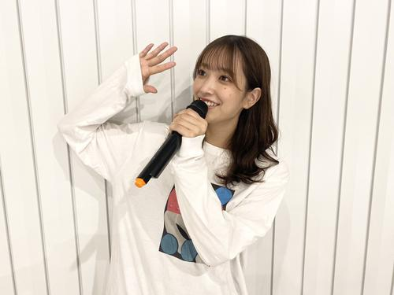

-
どんなグループ？
アイドル界のトップに君臨する坂道グループのパイオニア。
2011年8月21日結成、応募総数3万8934人の中から36名が選ばれ1期性メンバーが決定。（白石麻衣、西野七瀬、生駒里奈、齋藤飛鳥など）
清楚で上品というコンセプトを持ち、圧倒的顔面偏差値の高さで男女問わずに人気を集めている。
1stシングル「ぐるぐるカーテン」でデビューし、17th「インフルエンサー」、20th「シンクロニシティ」ではレコード大賞を受賞。
また、音楽以外でも様々な業界で活躍をしており、メンバー個人でも活躍している姿をテレビでもよく見かける。
特に写真集に関しては爆発的人気を誇っており、卒業メンバーの白石麻衣の写真集「パスポート」は写真集売り上げ歴代1位を記録した。
最近は1期生の卒業ラッシュ（西野、白石の2大エース卒業など）により低迷も危ぶまれたが、3，4期生を中心とした若い世代の台頭もあり、人気を維持している。
また、2期生不遇が叫ばれる中、2期生のリーダーであった堀未央奈が卒業を発表したためここから2期生の卒業が加速するのではないかという心配もある。
冠番組
乃木坂46デビューと同時に冠番組「乃木坂ってどこ」がスタート。
2015年、4月13日の放送を機にリニューアルを迎え、「乃木坂工事中」に改名。
毎週日曜日深夜24時00分から始まる30分番組としてテレビ東京で放送されている。
MCは人気お笑いコンビ「バナナマン」の2人が務めている。
メンバーとバナナマンとの間には強固な信頼関係が結ばれており、乃木坂メンバーはバナナマンのことを、「公式お兄ちゃん」と慕っている。
番組内でも仲の良さが見て取れるが、最近は冠番組以外での共演も目立ち、良い関係性が築かれていることが分かる。
メンバー紹介
数名ではあるが、メンバーの紹介をしていきたい。
秋元真夏
1期生メンバーで現在キャプテンを務めている。
明るい性格でメンバーから愛されており、信頼も厚い。
頭が大きいことが悩みであったが、バナナマンやメンバーからいじられることで今では笑いの武器となった。（実際は周りのメンバーの顔が小さすぎるだけ）
音痴で運動神経も悪いことを自覚しているが、一生懸命努力を重ね、技術面の向上も見せている。
生田絵梨花
数少ない1期生メンバーであり、1stシングルからグループを支えてきた。
美声を生かした高い歌唱力はアイドルの域を超え、ミュージカル等でも大活躍してる。
どのシングルでも彼女の歌唱力は目立ち、グループに欠かせない存在の一人。
明るいキャラクターと高いパフォーマンスでメンバーやファンから愛されている。
写真集「インターミッション」はオリコン年間BOOK売り上げランキング2019で期間内売り上げ29.1万部を記録し1位を獲得した。
齋藤飛鳥
1期生の中では最年少メンバー。
今となっては乃木坂の顔として高い知名度を誇るが、当初は不遇の時期もあった苦労人である。
ファッションモデル、女優、舞台など幅広い分野で活躍を見せている。
アイドル界最小クラスの顔の小ささが特徴的で、よく秋元真夏と比較される。
西野、白石が抜けた穴を埋める新エースとしての活躍が期待されている。
山下美月
台頭を見せている3期生メンバーの1人。
26枚目シングル「僕は僕を好きになる」では、彼女自身初の表題曲センターを務める。
ファッションモデルや女優としても活躍している中、2020年11月30日からは「水曜ヒルナンデス」のレギュラーメンバーとして出演している。
名前の由来は「月がきれいな夜に生まれたから」という素敵なエピソードを持っている。
全メンバーが紹介されている公式サイトはこちらをクリック
好きな曲ベスト３
3位：サヨナラの意味
16thシングルとしてリリースされた楽曲。
それまでグループを支え、その人柄からすべてのファンに愛された橋本奈々未の卒業シングル。
物語性のあるMVと別れを歌った歌詞がファンの感動を誘った。
メッセージ性の強い歌詞とゆったりとした曲調が好きでよく聴いてます。
2000万回以上再生されているMVはこちら！
2位：I see...
25thシングルのカップリング曲として収録された4期生の楽曲。
これまでの乃木坂に楽曲には無いタイプの曲調であったがファンからの人気も高い。
曲調がSMAPに似ていると話題になり、乃木坂ファンだけでなくたくさんの人がMVを視聴視聴した。
4期生のフレッシュさが表現されており、明るい楽曲であり一度耳にするとそのテンポが頭から離れなくなる。
SMAP感が話題となったMVはこちら！
1位：きっかけ
2ndアルバム「それぞれの椅子」に収録された楽曲。
ファンの間でも人気の楽曲であり、Mr. Childrenの桜井和寿さんがライブでカバーしたことで大きな話題となった。
歌詞のメッセージ性が非常に強く、人生において何度も迫られる決断・選択ということに関して考えさせられる内容になっている。
「生きるとは選択肢 たったひとつを選ぶこと」という歌詞が個人的に刺さった。
メンバーが46時間テレビ内で黒板アートを作成している様子をバックに進んでいくビデオはこちら！
-
どんなグループ？
乃木坂に次ぐ2番目の坂道グループ「欅坂46」として誕生。
乃木坂とはコンセプトの違う、クールで笑わないパフォーマンスが特徴であり多くの熱狂的ファンを持つ。
1stシングル「サイレントマジョリティー」は現代社会における若者の不満や葛藤をストレートに表現した曲で、アイドルという枠組みを超え注目を集めた。
欅坂46時代は平手友梨奈を絶対的センターに据え、圧倒的なパフォーマンスでファンを魅了してきた。
平手依存が強まる中、メンバーの中には「平手のバックダンサーをやっているようだった。」と感じてしまっていたメンバーもいたという。
また、平手への負担も重くなり身体的・精神的苦痛からパフォーマンスが苦しくなった時期もあった。
紅白歌合戦で「不協和音」を披露した際には失神して倒れてしまうメンバーも出てしまうなど、グループ全体としても苦しい状況が続いていた。
しかし、2019年年末の紅白で再度、「不協和音」を披露。
見事なパフォーマンスを披露し、欅坂46完全復活を印象付けた。
だが、その後突如絶対的センター平手友梨奈がグループ脱退を発表。
「欅坂46＝平手友梨奈」というイメージが強かったこともあり、グループ名を「櫻坂46」へと変更し、心機一転スタートを図り今に至る。
冠番組
欅坂46デビューと同時に冠番組「欅って、書けない？」がスタート。
櫻坂への改名を機に番組名も「そこ曲がったら櫻坂」に変更された。
毎週日曜日深夜24時35分から始まる30分番組としてテレビ東京で放送されている。
クールなイメージが強いグループだが、番組内では普段見れないような一面が見れるとファンに人気である。
番組MCはお笑い芸人土田晃之とハライチ澤部佑が務める。
メンバー紹介
数名ではあるが、メンバーの紹介をしていきたい。
菅井友香
1期生メンバーで現在キャプテンを務めている。
明るいポンコツキャラだが、グループを牽引してきた。
筋金入りのお嬢様で、実家はかなりの金持ち。
番組内では「正月を軽井沢の別荘で過ごした」と話していたこともあるいう。
また、幼少のころから馬術を習っており、学生時代は馬術部に所属していた。
おっとりとした性格ではあるが、リーダーシップを発揮しグループを引っ張っていく。
守屋茜
1期生メンバーであり、欅坂46時代は副キャプテンとしてグループを支えてきた。
負けず嫌いな性格で、番組内の対決系企画ではいつも一生懸命に取り組んでいる姿勢がファンに好評。
美容にかなりのこだわりを持っており、その美しさを常に維持する努力には同グループのメンバーも尊敬している。
ブログなどでもスキンケアの仕方を公開しており女性ファンも多い。
森田ひかる
2期生メンバーで、櫻坂1stシングル「Nobody’s fault」でセンターに抜擢された。。
おっとりした見た目ではあるが、独特の感性を持っておりそのギャップからファンも多い。
番組内でも、周りのメンバーとは違うところで笑ったり、人のちょっとしたミスにツボったりしているシーンがあった。
ただ、曲のパフォーマンスにおける存在感は光るものがあり、センターに抜擢されたのも頷ける。
松田里奈
2期生メンバーで、櫻坂46の改名に伴い副キャプテンに任命された。
コミュニケーション能力が高く、先輩後輩関係なく仲良く、メンバーからの信頼も厚い。
また、元銀行員という異色の経歴を持っており、番組内でも札勘を披露する場面も見られた。。
「ネプリーグ」に出演した際には思わぬ放送事故を起こし、話題を呼んだ（笑）
人当たりの良さを生かし、副キャプテンとしてグループを陰から支える。
全メンバーが紹介されている公式サイトはこちらをクリック
好きな曲ベスト３
3位：サイレントマジョリティー
欅坂46のデビューシングル。
「声なき多数派」という意味で、現代社会での生活に苦しむ若者に対して「周りに左右されることなく自分の意見・考えを持って進んでいけ」と呼び掛けるようなメッセージ性の強い曲となっている。
デビューシングルからかなりのインパクトを残し、多くのファンを創出した。
欅坂46の社会に対するアンチテーゼを唱えるようなスタイルが確立された曲であり、欅坂の代名詞的な存在の曲ともいえる。
1億5000万回以上の再生数を誇るMVはこちら！
2位：不協和音
欅坂46の4thシングルとしてリリースされた楽曲。
サイレントマジョリティーと同様かなりメッセージ性が強い、欅坂色にあふれた曲となっている。
紅白で2度披露されているが、かなり体力を消耗するダンスナンバーであり、1度目の披露時には失神して倒れてしまうメンバーが発生し物議をかもした。2度目の披露時は完璧なパフォーマンスを見せつけ、視聴者を魅了した。
初めてこの曲のパフォーマンスを見たときは、アイドルの曲という枠組みを超えた圧巻のパフォーマンスに私自身も胸を突き動かされた。
激しいパフォーマンスと強いメッセージ性を持つMVはこちら！
1位：黒い羊
欅坂46の8thシングルとしてリリースされた楽曲。
黒い羊とは白い羊の中に１匹黒い羊が紛れているという状況から、「変わり者」、「厄介者」という意味である。
この曲も欅らしさ全開の曲となっており、ファンの間でも人気の楽曲の1つである。
アイドル界に革命を起こした彼女たちならではの苦悩なども代弁されているような歌詞が印象的であり、MVもかなり欅ならではの構成となっており非常に魅力的である。
ストーリー性、メッセージ性に富んだMVはこちら！
-
どんなグループ？
欅坂46のアンダーグループ「けやき坂４６（ひらがなけやき）」として集結したグループ
けやき坂46時代には欅坂46という大きな存在の影となってしまい活躍の場が中々与えられなかった。
メンバーは将来に対する不安からグループをやめたいと考える人も多かった。
しかし、様々な困難を乗り越え、「日向坂46」としてデビュー。
けやき坂46としてスタートしてから3年後にやっと単独デビューという夢が叶い、それまでの苦労が報われた瞬間となった。
この3年間の苦労から日向坂46としての現在までをまとめた映画「3年目のデビュー」はファンの感動を誘ったのはもちろん、新規ファンの創出にもつながり大きな話題を呼んだ。
グループのコンセプトとして、見ている人に「ハッピーオーラ」を届けるということを据えており、彼女たちの底抜けの明るさに元気をもらうファンも多い。
日向坂46としてのデビュー後は順調にステップアップを遂げ、デビューから2年連続紅白出演。
けやき坂46時代の辛い経験から、一つ一つの仕事に丁寧に、また、常に笑顔で取り組む姿勢から業界内でも高い評価を得ている。
ファンの総称を「おひさま」と呼び、ファンに照らされているからこそ輝けているというコンセプトを大切にしている。
冠番組
 2018年4月から初冠番組「ひらがな推し」がスタート。
2018年4月から初冠番組「ひらがな推し」がスタート。日向坂46への改名を機に番組名も「日向坂で会いましょう」に変更された。
毎週日曜日深夜25時05分から始まる30分番組としてテレビ東京で放送されている。
バラエティー能力の高いメンバーが多く、番組内では大喜利やミニコントなどアイドル番組とは思えない内容を扱うことも多いが、それもそつなくこなすという異常性を見せている。
番組MCは人気お笑いコンビオードリーの二人が務めているがオードリーの二人も日向坂メンバーのバラエティー能力の高さに舌を巻く場面も多い。
個人的に3グループの番組の中で一番面白く、毎週欠かさず見ている。
メンバー紹介
数名ではあるが、メンバーの紹介をしていきたい。
 佐々木久美
けやき坂46時代からキャプテンを務めるクループ最年長メンバー。
最年長ということもあり、メンバーやオードリーから「おばさん」といじられる場面も多々ある。。
だがキャプテンとしてグループを引っ張る力には定評があり、グループ内にも尊敬しているメンバーが多数存在するほど信頼され、愛されている。
お笑いが好きで、本人も番組内でモノマネを見せたり、大喜利コーナーでは芸人顔負けの回答を出しオードリーや視聴者を驚かせる場面もあった。
身長も高くモデルとしても活躍している。。
最近では番組のＭＣを務めたり、バラエティー番組でも爪痕を残すなど幅広い分野で活躍を見せている。
佐々木美玲
1期生メンバーであり、けやき坂時代の苦しい時代を経験しているメンバー
けやき坂時代からフロントメンバー、センターとしてチームを牽引してきた。
「みーぱん」という愛称で親しまれている。
明るいキャラクターとポンコツを兼ね備えた愛されキャラでありながら、歌唱力やパフォーマンスレベルの高さも兼ね備えるなど、アイドルとして必要な要素を全て兼ね備えている。
最新シングル「アザトカワイイ」では久々にセンターを務めメディアへの露出も激増。
情報番組「スッキリ」において個人コーナーを任されるなど活躍の幅を広げている。
加藤史帆
上記2名と同様1期生メンバーとして辛い経験を乗り越えてきたメンバー。
「かとし」、「としちゃん」、「しし」など様々な呼称をもっている。
へにょへにょした喋り方が特徴的であるが、歌唱力の高さやパフォーマンスレベルの高さも持ち合わせており、そういったギャップからもファンが多い。
けやき坂46時代からフロントメンバーとして常にグループを牽引してきており、今後も更なる活躍が期待される。
小坂菜緒
2期生メンバーでありながら日向坂46の中心メンバーとして活躍している。
日向坂46としてのデビュー以後にリリースしたシングルにおいて4作連続でセンターを努めてきた。
関西出身であるが、人見知りだと自身は公言している。
ルックスの美しさ、かわいらしさに加え、時折見せる明るい一面や独特の感性が好感度を上げており、日向坂の顔としてグループを牽引している。
舞台やドラマ、映画、バラエティーなど幅広い分野で活躍を見せており個人としての活躍にも期待がかかる。
全メンバーが紹介されている公式サイトはこちらをクリック
好きな曲ベスト３
3位：キュン
日向坂46のデビューシングルとしてリリースされた楽曲。
日向坂のコンセプトであるハッピーオーラ前回の楽曲構成になっており聴くと元気をもらえる。
サビの振付はキュンキュンダンスとして注目を浴びSNSでも話題を呼んだ。
日向坂のスタートを印象付け、さらに、彼女たちの原点ともいえる大事な曲でありファンからも愛されている。
日向坂としてのデビュー作である楽曲のMVはこちら！
2位：ホントの時間
3rdシングルのカップリング曲として収録された楽曲。
カップリング曲ではあるもののファンから絶大な人気を誇っている楽曲の1つである。
黄色い衣装を身にまとい、明るい曲調に乗せたかわいらしいダンスが特徴的。
「現国の授業中はゆっくりと針が進むのに」といった歌詞が盛り込まれており、好きなことをやっているときと嫌いなことをやっているときで時間の進み方が違うという誰もが抱く感覚をわかりやすく表現しておりとても共感できる。
聴けば必ず共感してもらえるこの曲のMVはこちら！
1位：青春の馬
4thシングルのカップリング曲として収録された楽曲。
歌詞、リズム、ダンスすべてに日向坂らしさが詰まっており、メンバーやファンからも人気の楽曲。
「がんばれ」と背中を押してくれるような力強い曲であり勇気をもらえる。
１番のAメロの冒頭の歌詞「自分の力とはどうやって測ればいい、誰かと比較したところで分からないだろう」という歌詞は他者と比べてしまうことが多い自分にはかなり響いた。
日向坂のグループカラーである水色をベースに用いたMVはこちら！